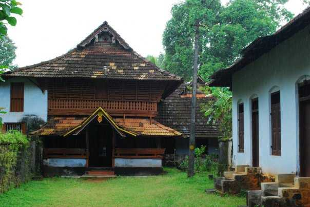
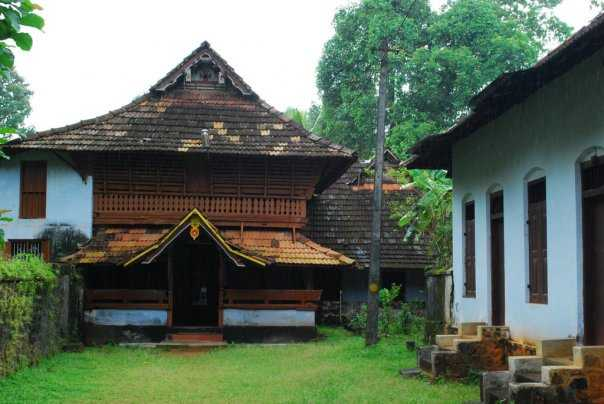

MAIN ATTRACTIONS
Nadukaani
After all the blessings from temples, it is time for some adventure. Nadukani is one such place nestled amid the wilderness of nature and densely wooded hills offering its visitors a beautiful trail for trekking.


Illikkal kallu
Located at a height of 6000 ft above the sea level in the Western Ghats of Kottayam, Kerala, Illikkal Kallu is a major tourist attraction and one of the most pristine spots in all of India. Situated in Moonnilavu Village, Meenachil taluk, the nearest city to the summit is Teekoy.
Marmala waterfalls
Located at a distance of few kms from Erattupetta in Kottayam inside a private rubber estate, Marmala Waterfalls are popularly known as the ‘enchantress of the jungle’. Plummeting from a height of 200 feet, the unblemished clear waters create and aura of mist around them.
 

Poonjar palace
A huge majestic palace bounded by a boundary of massive walls is Poonjar Palace situated in Meenachil Taluka. The palace is adorned with a fascinating collection of various type of furniture and antiques which includes grand chandeliers, jewelry boxes, statues, grain measurer, weapons and palm leaf engravings.
Kumarakom bird sanctuary
A paradise for bird watchers, Kumarakom Bird Sanctuary or Vembanad Bird Sanctuary is situated on the banks of Lake Vembanad in kavanar River basin. The place is spread across a huge area of 14 acres providing a natural habitat to about 91 species of local birds and 50 species of migratory birds.